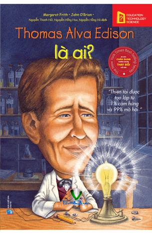

« Back
Thomas Alva Edison Là Ai
By Margaret Frith, John O'brien

PHẦN 1MỘT NHÀ CHÍNH TRỊ LƯU VONG
TÔM.
Những Trò Tinh Nghịch Và Mầm Mống Của Thiên Tài.
Một Thí Nghiệm Về Phép “Bay Lên Cao”
Nhắc Bài Bằng Điện Báo.
Một Thí Nghiệm Nổi Tiếng
Bị Đuổi
Tôm Bán Hàng Rong
“Trưởng Phòng Thí Nghiệm” Và Con Người Không Biết Sợ Hãi.
Nhà Báo Và Nhà Xuất Bản.
Chai Ni-Tơ-Rô Gli-Xê-Rin
Những Chuyện Không May
Chiếc Gương Của Hiệu Tạp Hoá
Một Trận Đòn Oan
Chiếc Cầu Gãy
PHẦN 2ĐI LÀM THUÊ
Tôm Bỏ Trốn
A-Đam
Ở Bốt-Xtơn
Ở Niu I-Oóc
Cái Chết Của Mẹ
Gia Đình Riêng.
Hoạt Động Tiếp Tục
PHẦN 3Ở MEN-LÔ PÁC
Hoàn Thành Máy Điện Thoại
Câu Chuyện Máy Ghi Âm
Nàng Tiên Ánh Sáng
Tàu Điện
Ông Tổ Của Máy Chiếu Bóng
Người Mở Đường
Những Ngày Cuối Đời